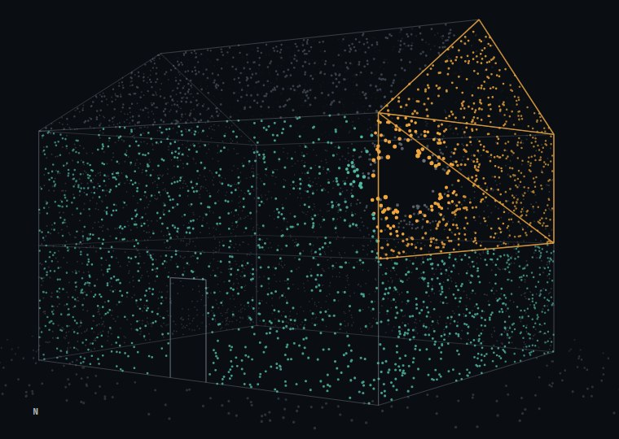
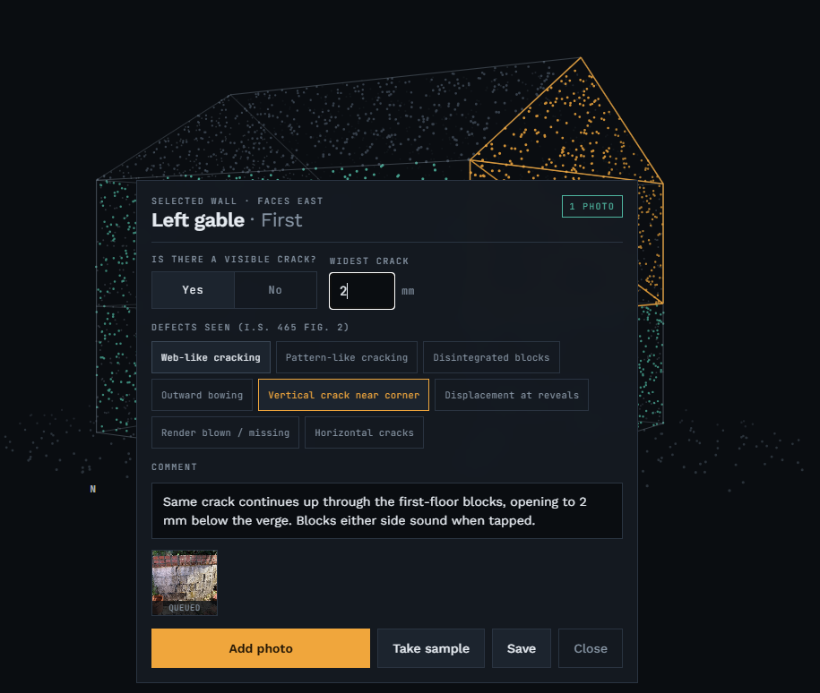

Mica Assess is a tablet tool for the Housing Agency's Framework Chartered Engineers. The case arrives from the council, the engineer turns a model of the house and taps each wall, and the report is drafted from what was captured. On site, with or without signal.
● Runs in the browser against a simulated server. No login, no install. A sample council email is one tap away. Best on a tablet or a laptop in landscape.

Defective concrete block damage is a rural, one-off-house problem. Cases reach the engineer as an email. The photos go on a phone, the notes on paper, and the report is assembled at a desk days later. The tool that fixes this has to work in a field in Donegal with no signal.
We built for the pipeline. Stage 6 has a panel of engineers, a queue of cases, external labs and statuses to track, and a result that has to go back to the council. That is the shape software fits. Today that traffic is email, and the demo takes the council's email as its only intake. The proposed channel is two-way and coded, like EDI: a case in from the agency, a signed-off assessment with its damage group and remediation option back out, as structured, encrypted data. The lab order and result already travel the same way inside the demo.
The pin is the clock. Pull it from the council's email to the signed PDF and the scene follows; let go and it settles on a step. Arrow keys work too.
A council email is the only way in. Case number, address and Eircode are read out of it.
Every step below works in the demo. Where the design goes further than the demo, the step says so. The order is the order of a real day.
The design is a coded, two-way channel with the agency, like EDI: the case in as structured, encrypted data, the signed-off assessment and its damage group back out the same way. The schema is defined and not yet wired, so the demo takes today's traffic instead, the council's email, and pulls case number, address and Eircode out of it. Either way there is no "new assessment" button: an uncommissioned assessment cannot exist.
Each case's status decides the only actions it offers: start, continue, review, edit. The shortest route over the day's houses is handed to Google Maps for the driving.
The front wall's bearing is set from the tablet's heading, and every other wall is named from it: North, South-west. That is how these reports are written, and it removes a manual step.
House type decides which walls exist. A semi's shared gable is drawn but dimmed, and appears in the report as "party wall, not assessed" rather than vanishing.
Widest crack in millimetres, crack pattern, and the Figure 2 defect checklist, captured beside the photos. A wall counts as done only with a photo, a comment, and the crack question answered.
Samples are tracked from taken to result in. The I.S. 465 Table 1 Building Group the evidence points to is suggested. The engineer confirms it, edits the report, signs it with their registration number, and exports a PDF.

A photo has an identity the moment it is taken, before any server has seen it. Every upload is an idempotent PUT, so the same photo arriving twice is the same row. Put the tablet in flight mode mid-assessment and nothing breaks. The queue drains when signal returns, and nothing is deleted locally until the server confirms.
The report and the sign-off unlock only when every assessable wall has a photo, a comment and the crack answer. The button says why it is disabled. Sign-off locks the report, and reopening it needs a written reason. The council would demand these rules anyway, so the tool enforces them.
Crack width and pattern are entered as fields. From them the report shows which Table 1 group the evidence points to, and why. Under I.S. 465:2026 the Chartered Engineer assigns the group, so the tool suggests and the engineer decides. Core testing follows the group: petrography, total sulfur, sulfide and sulfate content.
Imported, started, photo added, field edited, wall cleared, signed off, reopened with a reason. The audit trail is visible on the case, because an audit nobody can inspect is not one.
An engineer on the Engineers Ireland I.S. 465 register signs this report and carries the liability for it.
"It does not assign a formal I.S. 465 damage rating unattended. An engineer signs this report and carries the liability, so the product speeds up their judgement rather than substituting for it."Decision log, 5 September 2026
| Stage | State |
|---|---|
| Council case intake from the agency email | Built |
| Coded two-way channel with the agency (case in, assessment out) | Schema defined |
| Day list and route planning | Built |
| Orientation from the tablet compass | Built |
| House type and shape become walls | Built |
| Turn the house, tap a wall | Built |
| Photograph a wall, comment, crack width, Figure 2 defects | Built |
| Offline queue, sync to the API | Built |
| Samples taken on site, tracked to the lab and back | Built |
| Suggested I.S. 465 Building Group (Table 1) | Built |
| Assessor edits, signs off, exports to PDF | Built |
| Internal rooms | Server ready |
| AI names the damage | Next |
| Login by Engineers Ireland registration number | Next |